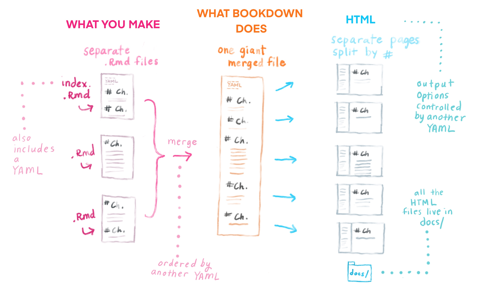

Chapter 1 Get Started
1.1 初始化bookdown專案
開始一個bookdown專案很簡單，先在Rstudio開啟一個新專案，選bookdown
開起來後，這個專案資料夾中，就會長成下圖：
可以看到，這個資料夾下的結構，包括幾大塊：
- 3 個 YAML檔： _bookdown.yml, _output.yml, index.Rmd
- 6 個範例.rmd檔: 01-Intro.Rmd, …, 06-reference.Rmd
- git檔： .git資料夾和.gitignore
- 其他optional可以刪掉的檔：book.bib, preamble.tex, style.css這些
- 3 個 YAML檔： _bookdown.yml, _output.yml, index.Rmd
這邊先介紹三個重要的YAML檔：
- _bookdown.yml: 裡面可以設定章節順序、build出的html/pdf等要output到哪個資料夾
- _output.yml: 裡面可以設定你要output的格式(e.g. html電子書, pdf, ePub…)，sidebar的toc想長成怎樣(e.g. header, footer, 或是collapse sub-section)，電子書上提供作者github連結、download連結
- index.Rmd: 這會是網頁電子書的homepage，或是pdf書籍的preface。
- _bookdown.yml: 裡面可以設定章節順序、build出的html/pdf等要output到哪個資料夾
1.2 更新_bookdown.yml中的內容：
- 打開原本的
_bookdown.yml，並幫他新增兩行指令，變成下面這樣：
book_filename: "bookdown_tutorial"
delete_merged_file: true
language:
ui:
chapter_name: "Chapter "
output_dir: docs
new_session: true一個一個解釋：
book_filename: "bookdown_tutorial"，這很明顯就是書籍的名稱
delete_merged_file: true： build book時，他會把k個.Rmd檔，先compile成k個.html檔，然後再merge成一個大的.html檔。那這邊設定true，就是只要留merge好的檔就好，原本那k個html檔請幫我刪掉
chapter_name: "Chapter "：這會幫你把每個章節的前面，都加上Chapter的字樣
output_dir: docs，這是新加入的指令，要求把build出來的html檔，都放到./docs的資料夾中。會做這樣的設定，是因為之後如果要把這本書，發佈到github pages(或是Netlify)，他們都是去./docs裡面找html檔。
new_session: true：這也是新加入的指令，他的意思是，我會獨立的對每個.Rmd檔做complie，並生出各自的html檔。如果沒做這個設定，那他會先把所有.Rmd檔都merge成一個超大.Rmd檔，然後compile這個超大的.Rmd檔，變成1個html檔。那這樣就很容易因為不同的.Rmd檔裡面用到相同名稱的變數，而造成彼此衝突。
1.3 調整_output.yml的內容
- 打開
_output.yml這個檔案，原本長這樣：
bookdown::gitbook:
css: style.css
config:
toc:
before: |
<li><a href="./">A Minimal Book Example</a></li>
after: |
<li><a href="https://github.com/rstudio/bookdown" target="blank">Published with bookdown</a></li>
download: ["pdf", "epub"]
bookdown::pdf_book:
includes:
in_header: preamble.tex
latex_engine: xelatex
citation_package: natbib
keep_tex: yes
bookdown::epub_book: default從架構上，就可以看到，他要output成三種格式：
- gitbook
- pdf_book
- epub_book
- gitbook
那因為，我只有興趣gitbook格式(就是html網頁拉)，所以我會先把pdf_book和epub_book都刪掉
接著講解
bookdown::gitbook下的設定：css: style.css:
config下，他設定了toc和download這兩塊。toc是網頁左側的outline，他加上before和after，意思是想把toc排列成before message -> chapter names -> after message這樣。我們現在從簡，所以刪光before和after。另外，download，是要做出download的按鈕，讓user可以把html下載成pdf或epub。
最終，我們只保留
gitbook的part，並刪除css, 刪除config下的toc，改動download的內容，變成：
bookdown::gitbook:
config:
download: ["pdf", "epub"]1.4 調整index.Rmd
- 記得，
index.Rmd是唯一可以在最上面寫YAML指令的檔案，其他.Rmd檔都不行
1.5 調整/新增自己的.Rmd檔案
- 現在可以把根目錄下的.Rmd檔全刪了，這都不是我要的
- 我可以開一個新的.Rmd檔，最上面不能有YAML設定，而是以
# Level 1 Header當開頭
- 這個Header就會是到時候顯示出來的章節名稱
1.6 關閉Jekyll
- 之後我們如果想發佈在GitHub pages，那需要先關閉Jekyll。因為GitHub Pages預設會使用Jekull來建立你的statis site，但，R Markdown相關的網頁，不需要用Jekyll。
- 要做到這件事，就是在專案根目錄下，建立一個
.nojekyll的空資料夾即可
1.7 Build a book
1.7.1 不要按Knit
- 不要按
Knit來compile各個.Rmd檔，如果不小心按了，那再自己把_book這個資料夾清掉
1.7.2 按Preview Book來build gitbook
如果你想要render出網頁電子書格式(gitbook)，那就在Addins的下拉式選單中，選取
Preview Book，就會完成compile ():- 把index.Rmd執行一次，得到index.html，放到
./docs之中，這會是首頁
- 把所有.Rmd檔都執行一次，得到一堆.html檔，都放到
./docs之中
- 按章節順序組出來
- 把index.Rmd執行一次，得到index.html，放到
上面的做法，等同於在console中key入：
bookdown::serve_book()，或是，bookdown::render_book("index.Rmd")他在背後做的事，可整理成下圖：

1.7.3 key 入 preview_chapter("my-chapter.Rmd")
- 那這樣做，就像以前在RMarkdown中，對
my-chapter.Rmd點Knit。但記得，在bookdown的世界，不要再點Knit了，所以才這樣做。
- 這樣做的好處是，不用compile所有.Rmd檔，只要compile你指定的
my-chapter.Rmd就好
1.7.4 一次build好幾種格式的book
- 如果你想同時build: gitbook(i.e. 網頁電子書)、pdf_book、epub_book，那你可以按
Build頁籤下的Build Book，他就會一次幫你build完 - 如果你在
_output.yml中，只有設定bookdown::gitbook:，那其實你用這邊的Build Book，或是剛剛講的Preview Book，其實是完全一樣的
1.8 push到github
- 在github先開個專案，名稱取的和現在這個專案一樣，記得不要勾README
- 接著就push上去吧！
git remote add origin git@github.com:LeeHank/bookdown_tutorial.git
git push -u origin master- 接著進到github的這個專案，選上方的
Settings，再從左邊的分類中找到Pages。
- 在source的地方，選
Branch:master，以及/docs，按下save，就搞定了
- 他會顯示，我們的網頁被publish在 https://leehank.github.io/bookdown_tutorial/
- 所以這串網址很規律：
https://{username}.github.in/{repository}